Spatial clustering and denoising expressions#
Spatial clustering, which shares an analogy with single-cell clustering, has expanded the scope of tissue physiology studies from cell-centroid to structure-centroid with spatially resolved transcriptomics (SRT) data.
Here, we presented four spatial clustering methods in OmicVerse.
We made three improvements in integrating the GraphST,BINARY,Banksy,CAST and STAGATE algorithm in OmicVerse:
We removed the preprocessing that comes with
GraphSTand used the preprocessing consistent with all SRTs in OmicVerseWe optimised the dimensional display of
GraphST, and PCA is considered a self-contained computational step.We implemented
mclustusing Python, removing the R language dependency.We provided a unified interface
ov.space.cluster, the user can use the function interface at once to complete all the simultaneous
If you found this tutorial helpful, please cite GraphST,BINARY,CAST, Banksy and STAGATE and OmicVerse:
Long, Y., Ang, K.S., Li, M. et al. Spatially informed clustering, integration, and deconvolution of spatial transcriptomics with GraphST. Nat Commun 14, 1155 (2023). https://doi.org/10.1038/s41467-023-36796-3
Lin S, Cui Y, Zhao F, Yang Z, Song J, Yao J, et al. Complete spatially resolved gene expression is not necessary for identifying spatial domains. Cell Genomics. 2024;4:100565.
Tang, Z., Luo, S., Zeng, H. et al. Search and match across spatial omics samples at single-cell resolution. Nat Methods 21, 1818–1829 (2024). https://doi.org/10.1038/s41592-024-02410-7
Singhal, V., Chou, N., Lee, J. et al. BANKSY unifies cell typing and tissue domain segmentation for scalable spatial omics data analysis. Nat Genet 56, 431–441 (2024)
Dong, K., Zhang, S. Deciphering spatial domains from spatially resolved transcriptomics with an adaptive graph attention auto-encoder. Nat Commun 13, 1739 (2022). https://doi.org/10.1038/s41467-022-29439-6
import omicverse as ov
#print(f"omicverse version: {ov.__version__}")
import scanpy as sc
#print(f"scanpy version: {sc.__version__}")
ov.style(font_path='Arial')
%load_ext autoreload
%autoreload 2
🔬 Starting plot initialization...
Using already downloaded Arial font from: /tmp/omicverse_arial.ttf
Registered as: Arial
🧬 Detecting GPU devices…
✅ NVIDIA CUDA GPUs detected: 1
• [CUDA 0] NVIDIA H100 80GB HBM3
Memory: 79.1 GB | Compute: 9.0
____ _ _ __
/ __ \____ ___ (_)___| | / /__ _____________
/ / / / __ `__ \/ / ___/ | / / _ \/ ___/ ___/ _ \
/ /_/ / / / / / / / /__ | |/ / __/ / (__ ) __/
\____/_/ /_/ /_/_/\___/ |___/\___/_/ /____/\___/
🔖 Version: 1.7.9rc1 📚 Tutorials: https://omicverse.readthedocs.io/
✅ plot_set complete.
Preprocess data#
Here we present our re-analysis of 151676 sample of the dorsolateral prefrontal cortex (DLPFC) dataset. Maynard et al. has manually annotated DLPFC layers and white matter (WM) based on the morphological features and gene markers.
This tutorial demonstrates how to identify spatial domains on 10x Visium data using STAGATE. The processed data are available at LieberInstitute/spatialLIBD. We downloaded the manual annotation from the spatialLIBD package and provided at https://drive.google.com/drive/folders/10lhz5VY7YfvHrtV40MwaqLmWz56U9eBP?usp=sharing.
adata = sc.read_visium(
path='data/151676',
count_file='151676_filtered_feature_bc_matrix.h5'
)
adata.var_names_make_unique()
reading data/151676/151676_filtered_feature_bc_matrix.h5
(0:00:00)
Note
We introduced the spatial special svg calculation module prost in omicverse versions greater than 1.6.0 to replace scanpy’s HVGs, if you want to use scanpy’s HVGs you can set mode=scanpy in ov.space.svg or use the following code.
#adata=ov.pp.preprocess(adata,mode='shiftlog|pearson',n_HVGs=3000,target_sum=1e4)
#adata.raw = adata
#adata = adata[:, adata.var.highly_variable_features]
sc.pp.calculate_qc_metrics(adata, inplace=True)
adata = adata[:,adata.var['total_counts']>100]
adata=ov.space.svg(adata,mode='pearsonr',n_svgs=3000,
target_sum=1e4,platform="visium",)
adata
🔍 [2026-01-08 00:32:43] Running preprocessing in 'cpu' mode...
Begin robust gene identification
After filtration, 10747/10747 genes are kept.
Among 10747 genes, 10747 genes are robust.
✅ Robust gene identification completed successfully.
Begin size normalization: shiftlog and HVGs selection pearson
🔍 Count Normalization:
Target sum: 10000.0
Exclude highly expressed: True
Max fraction threshold: 0.2
⚠️ Excluding 0 highly-expressed genes from normalization computation
Excluded genes: []
✅ Count Normalization Completed Successfully!
✓ Processed: 3,460 cells × 10,747 genes
✓ Runtime: 0.14s
🔍 Highly Variable Genes Selection (Experimental):
Method: pearson_residuals
Target genes: 3,000
Theta (overdispersion): 100
✅ Experimental HVG Selection Completed Successfully!
✓ Selected: 3,000 highly variable genes out of 10,747 total (27.9%)
✓ Results added to AnnData object:
• 'highly_variable': Boolean vector (adata.var)
• 'highly_variable_rank': Float vector (adata.var)
• 'highly_variable_nbatches': Int vector (adata.var)
• 'highly_variable_intersection': Boolean vector (adata.var)
• 'means': Float vector (adata.var)
• 'variances': Float vector (adata.var)
• 'residual_variances': Float vector (adata.var)
Time to analyze data in cpu: 1.34 seconds.
computing PCA
with n_comps=50
finished (0:00:01)
✅ Preprocessing completed successfully.
Added:
'highly_variable_features', boolean vector (adata.var)
'means', float vector (adata.var)
'variances', float vector (adata.var)
'residual_variances', float vector (adata.var)
'counts', raw counts layer (adata.layers)
End of size normalization: shiftlog and HVGs selection pearson
AnnData object with n_obs × n_vars = 3460 × 10747
obs: 'in_tissue', 'array_row', 'array_col', 'n_genes_by_counts', 'log1p_n_genes_by_counts', 'total_counts', 'log1p_total_counts', 'pct_counts_in_top_50_genes', 'pct_counts_in_top_100_genes', 'pct_counts_in_top_200_genes', 'pct_counts_in_top_500_genes'
var: 'gene_ids', 'feature_types', 'genome', 'n_cells_by_counts', 'mean_counts', 'log1p_mean_counts', 'pct_dropout_by_counts', 'total_counts', 'log1p_total_counts', 'n_cells', 'percent_cells', 'robust', 'highly_variable_features', 'means', 'variances', 'residual_variances', 'highly_variable_rank', 'highly_variable', 'space_variable_features'
uns: 'spatial', 'log1p', 'hvg', 'pca', 'status', 'status_args', 'REFERENCE_MANU'
obsm: 'spatial', 'X_pca'
varm: 'PCs'
layers: 'counts'
adata.write('data/cluster_svg.h5ad',compression='gzip')
adata=ov.read('data/cluster_svg.h5ad',compression='gzip')
(Optional) We read the ground truth area of our spatial data
This step is not mandatory to run, in the tutorial, it’s just to demonstrate the accuracy of our clustering effect, and in your own tasks, there is often no Ground_truth
# read the annotation
import pandas as pd
import os
Ann_df = pd.read_csv(os.path.join('data/151676', '151676_truth.txt'), sep='\t', header=None, index_col=0)
Ann_df.columns = ['Ground Truth']
adata.obs['Ground Truth'] = Ann_df.loc[adata.obs_names, 'Ground Truth']
sc.pl.spatial(adata, img_key="hires", color=["Ground Truth"])
{kind=link}
Method1: GraphST#
GraphST was rated as one of the best spatial clustering algorithms on Nature Method 2024.04, so we first tried to call GraphST for spatial domain identification in OmicVerse.
methods_kwargs={}
methods_kwargs['GraphST']={
'device':'cuda:0',
'n_pcs':30
}
adata=ov.space.clusters(adata,
methods=['GraphST'],
methods_kwargs=methods_kwargs,
lognorm=1e4)
The GraphST method is used to embed the spatial data.
Begin to train ST data...
Optimization finished for ST data!
computing PCA
with n_comps=30
finished (0:00:01)
GraphST embedding has been saved in adata.obsm["GraphST_embedding"] and adata.obsm["graphst|original|X_pca"]
The GraphST embedding are stored in adata.obsm["GraphST_embedding"].
Shape: (3460, 3000)
ov.utils.cluster(adata,use_rep='graphst|original|X_pca',method='mclust',n_components=10,
modelNames='EEV', random_state=112,
)
adata.obs['mclust_GraphST'] = ov.utils.refine_label(adata, radius=50, key='mclust')
adata.obs['mclust_GraphST']=adata.obs['mclust_GraphST'].astype('category')
running GaussianMixture clustering
finished: found 10 clusters and added
'mclust', the cluster labels (adata.obs, categorical)
res=ov.space.merge_cluster(adata,groupby='mclust_GraphST',use_rep='graphst|original|X_pca',
threshold=0.2,plot=True)
Storing dendrogram info using `.uns['dendrogram_mclust_GraphST']`
The merged cluster information is stored in adata.obs["mclust_GraphST_tree"].
{kind=link}
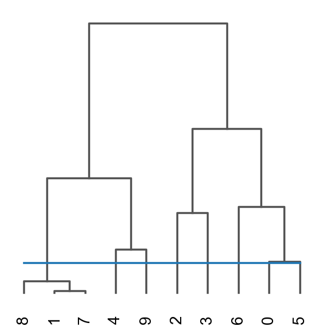
sc.pl.spatial(adata, color=['mclust_GraphST','mclust_GraphST_tree','mclust','Ground Truth'])
{kind=link}
We can also use mclust_R to cluster the spatial domain, but this method need to install rpy2 at first.
The use of the mclust algorithm requires the rpy2 package and the mclust package. See https://pypi.org/project/rpy2/ and https://cran.r-project.org/web/packages/mclust/index.html for detail.
ov.utils.cluster(adata,use_rep='graphst|original|X_pca',method='mclust_R',n_components=10,
random_state=42,
)
adata.obs['mclust_R_GraphST'] = ov.utils.refine_label(adata, radius=30, key='mclust_R')
adata.obs['mclust_R_GraphST']=adata.obs['mclust_R_GraphST'].astype('category')
res=ov.space.merge_cluster(adata,groupby='mclust_R_GraphST',use_rep='graphst|original|X_pca',
threshold=0.2,plot=True)
fitting ...
|======================================================================| 100%
finished: found 10 clusters and added
'mclust', the cluster labels (adata.obs, categorical)
Storing dendrogram info using `.uns['dendrogram_mclust_R_GraphST']`
The merged cluster information is stored in adata.obs["mclust_R_GraphST_tree"].
{kind=link}
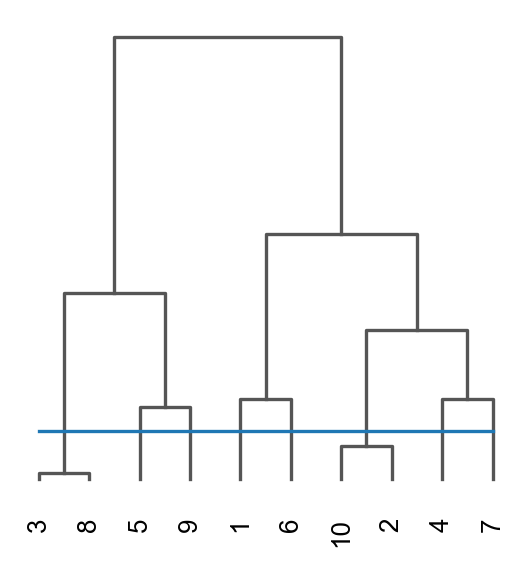
sc.pl.spatial(adata, color=['mclust_R_GraphST','mclust_R_GraphST_tree','mclust','Ground Truth'])
{kind=link}
Method2: BINARY#
BINARY outperforms existing methods across various SRT data types while using significantly less input information.
If your data is very large, or very sparse, I believe BINARY would be a great choice.
methods_kwargs={}
methods_kwargs['BINARY']={
'use_method':'KNN',
'cutoff':6,
'obs_key':'BINARY_sample',
'use_list':None,
'pos_weight':10,
'device':'cuda:0',
'hidden_dims':[512, 30],
'n_epochs': 1000,
'lr': 0.001,
'key_added': 'BINARY',
'gradient_clipping': 5,
'weight_decay': 0.0001,
'verbose': True,
'random_seed':0,
'lognorm':1e4,
'n_top_genes':2000,
}
adata=ov.space.clusters(adata,
methods=['BINARY'],
methods_kwargs=methods_kwargs)
The BINARY method is used to embed the spatial data.
Recover the counts matrix from log-normalized data.
extracting highly variable genes
--> added
'highly_variable', boolean vector (adata.var)
'highly_variable_rank', float vector (adata.var)
'means', float vector (adata.var)
'variances', float vector (adata.var)
'variances_norm', float vector (adata.var)
------Constructing spatial graph...------
The graph contains 20760 edges, 3460 cells.
6.0000 neighbors per cell on average.
Size of Input: (3460, 2000)
The binary embedding are stored in adata.obsm["BINARY"].
Shape: (3460, 30)
if you want to use R’s mclust, you can use ov.utils.cluster.
But you need to install rpy2 and mclust at first.
ov.utils.cluster(adata,use_rep='BINARY',method='mclust_R',n_components=10,
random_state=42,
)
adata.obs['mclust_BINARY'] = ov.utils.refine_label(adata, radius=30, key='mclust_R')
adata.obs['mclust_BINARY']=adata.obs['mclust_BINARY'].astype('category')
fitting ...
|======================================================================| 100%
res=ov.space.merge_cluster(adata,groupby='mclust_BINARY',use_rep='BINARY',
threshold=0.01,plot=True)
Storing dendrogram info using `.uns['dendrogram_mclust_BINARY']`
The merged cluster information is stored in adata.obs["mclust_BINARY_tree"].
{kind=link}
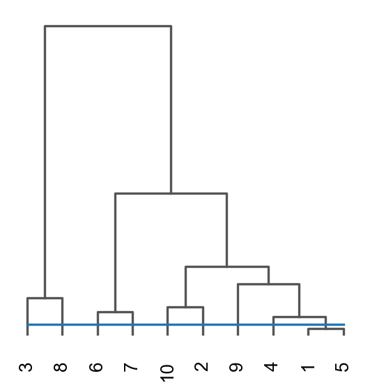
sc.pl.spatial(adata, color=['mclust_BINARY','mclust_BINARY_tree','mclust','Ground Truth'])
{kind=link}
ov.utils.cluster(adata,use_rep='BINARY',method='mclust',n_components=10,
modelNames='EEV', random_state=42,
)
adata.obs['mclustpy_BINARY'] = ov.utils.refine_label(adata, radius=30, key='mclust')
adata.obs['mclustpy_BINARY']=adata.obs['mclustpy_BINARY'].astype('category')
running GaussianMixture clustering
finished: found 10 clusters and added
'mclust', the cluster labels (adata.obs, categorical)
adata.obs['mclustpy_BINARY']=adata.obs['mclustpy_BINARY'].astype('category')
res=ov.space.merge_cluster(adata,groupby='mclustpy_BINARY',use_rep='BINARY',
threshold=0.013,plot=True)
Storing dendrogram info using `.uns['dendrogram_mclustpy_BINARY']`
The merged cluster information is stored in adata.obs["mclustpy_BINARY_tree"].
{kind=link}
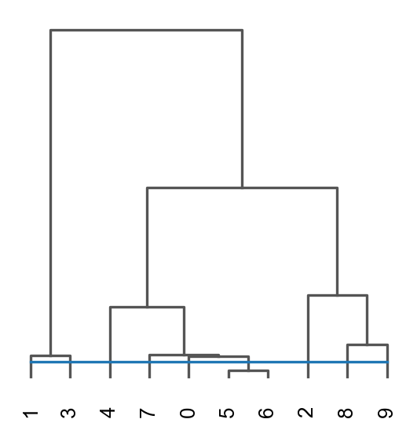
sc.pl.spatial(adata, color=['mclustpy_BINARY','mclustpy_BINARY_tree','mclust','Ground Truth'])
#adata.obs['mclust_BINARY'] = ov.utils.refine_label(adata, radius=30, key='mclust')
#adata.obs['mclust_BINARY']=adata.obs['mclust_BINARY'].astype('category')
{kind=link}
Method3: STAGATE#
STAGATE is designed for spatial clustering and denoising expressions of spatial resolved transcriptomics (ST) data.
STAGATE learns low-dimensional latent embeddings with both spatial information and gene expressions via a graph attention auto-encoder. The method adopts an attention mechanism in the middle layer of the encoder and decoder, which adaptively learns the edge weights of spatial neighbor networks, and further uses them to update the spot representation by collectively aggregating information from its neighbors. The latent embeddings and the reconstructed expression profiles can be used to downstream tasks such as spatial domain identification, visualization, spatial trajectory inference, data denoising and 3D expression domain extraction.
Dong, Kangning, and Shihua Zhang. “Deciphering spatial domains from spatially resolved transcriptomics with an adaptive graph attention auto-encoder.” Nature Communications 13.1 (2022): 1-12.
Here, we used ov.space.pySTAGATE to construct a STAGATE object to train the model.
methods_kwargs={}
methods_kwargs['STAGATE']={
'num_batch_x':3,'num_batch_y':2,
'spatial_key':['X','Y'],'rad_cutoff':200,
'num_epoch':1000,'lr':0.001,
'weight_decay':1e-4,'hidden_dims':[512, 30],
'device':'cuda:0',
#'n_top_genes':2000,
}
adata=ov.space.clusters(adata,
methods=['STAGATE'],
methods_kwargs=methods_kwargs)
The STAGATE method is used to cluster the spatial data.
------Calculating spatial graph...
The graph contains 3060 edges, 559 cells.
5.4741 neighbors per cell on average.
------Calculating spatial graph...
The graph contains 3328 edges, 595 cells.
5.5933 neighbors per cell on average.
------Calculating spatial graph...
The graph contains 3448 edges, 613 cells.
5.6248 neighbors per cell on average.
------Calculating spatial graph...
The graph contains 3044 edges, 541 cells.
5.6266 neighbors per cell on average.
------Calculating spatial graph...
The graph contains 3128 edges, 559 cells.
5.5957 neighbors per cell on average.
------Calculating spatial graph...
The graph contains 3320 edges, 595 cells.
5.5798 neighbors per cell on average.
------Calculating spatial graph...
The graph contains 20052 edges, 3460 cells.
5.7954 neighbors per cell on average.
The STAGATE representation values are stored in adata.obsm["STAGATE"].
The rex values are stored in adata.layers["STAGATE_ReX"].
The STAGATE embedding are stored in adata.obsm["STAGATE"].
Shape: (3460, 30)
{kind=link}
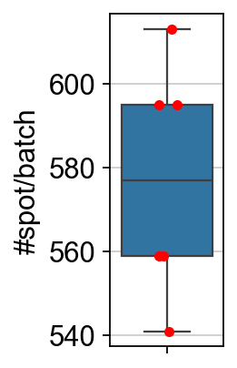
{kind=link}
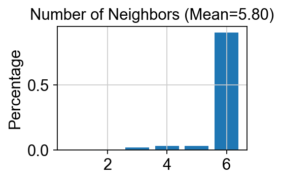
ov.utils.cluster(adata,use_rep='STAGATE',method='mclust_R',n_components=10,
random_state=112,
)
adata.obs['mclust_R_STAGATE'] = ov.utils.refine_label(adata, radius=30, key='mclust_R')
adata.obs['mclust_R_STAGATE']=adata.obs['mclust_R_STAGATE'].astype('category')
res=ov.space.merge_cluster(adata,groupby='mclust_R_STAGATE',use_rep='STAGATE',
threshold=0.005,plot=True)
fitting ...
|======================================================================| 100%
finished: found 10 clusters and added
'mclust', the cluster labels (adata.obs, categorical)
Storing dendrogram info using `.uns['dendrogram_mclust_R_STAGATE']`
The merged cluster information is stored in adata.obs["mclust_R_STAGATE_tree"].
{kind=link}
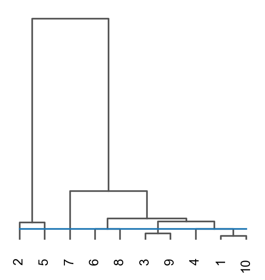
sc.pl.spatial(adata, color=['mclust_R_STAGATE','mclust_R_STAGATE_tree','mclust_R','Ground Truth'])
{kind=link}
Denoising#
adata.var.sort_values('PI',ascending=False).head(5)
| gene_ids | feature_types | genome | n_cells_by_counts | mean_counts | log1p_mean_counts | pct_dropout_by_counts | total_counts | log1p_total_counts | n_cells | SEP | SIG | PI | Moran_I | Geary_C | p_norm | p_rand | fdr_norm | fdr_rand | space_variable_features | |
|---|---|---|---|---|---|---|---|---|---|---|---|---|---|---|---|---|---|---|---|---|
| MBP | ENSG00000197971 | Gene Expression | GRCh38 | 3411 | 15.419075 | 2.798444 | 1.416185 | 53350.0 | 10.884648 | 3411 | 0.823299 | 0.214148 | 1.000000 | 0.910362 | 0.092733 | 0.0 | 0.0 | 0.0 | 0.0 | True |
| GFAP | ENSG00000131095 | Gene Expression | GRCh38 | 2938 | 3.930347 | 1.595409 | 15.086705 | 13599.0 | 9.517825 | 2938 | 0.694169 | 0.129941 | 0.587889 | 0.743831 | 0.255528 | 0.0 | 0.0 | 0.0 | 0.0 | True |
| PLP1 | ENSG00000123560 | Gene Expression | GRCh38 | 3214 | 9.255780 | 2.327842 | 7.109827 | 32025.0 | 10.374304 | 3214 | 0.668771 | 0.099919 | 0.478698 | 0.737326 | 0.264750 | 0.0 | 0.0 | 0.0 | 0.0 | True |
| MT-ND1 | ENSG00000198888 | Gene Expression | GRCh38 | 3460 | 74.200577 | 4.320159 | 0.000000 | 256734.0 | 12.455800 | 3460 | 0.362000 | 0.163292 | 0.359299 | 0.740392 | 0.262487 | 0.0 | 0.0 | 0.0 | 0.0 | True |
| MT-CO1 | ENSG00000198804 | Gene Expression | GRCh38 | 3460 | 115.025436 | 4.753809 | 0.000000 | 397988.0 | 12.894179 | 3460 | 0.472005 | 0.100106 | 0.338241 | 0.755924 | 0.246897 | 0.0 | 0.0 | 0.0 | 0.0 | True |
plot_gene = 'MBP'
import matplotlib.pyplot as plt
fig, axs = plt.subplots(1, 2, figsize=(8, 4))
sc.pl.spatial(adata, img_key="hires", color=plot_gene, show=False, ax=axs[0], title='RAW_'+plot_gene, vmax='p99')
sc.pl.spatial(adata, img_key="hires", color=plot_gene, show=False, ax=axs[1], title='STAGATE_'+plot_gene, layer='STAGATE_ReX', vmax='p99')
[<AxesSubplot: title={'center': 'STAGATE_MBP'}, xlabel='spatial1', ylabel='spatial2'>]
{kind=link}
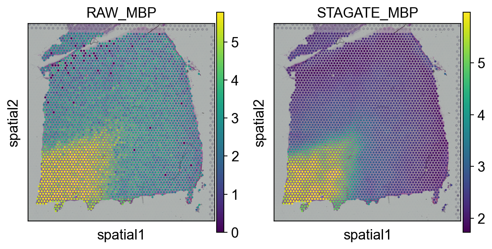
Method4: CAST#
CAST would be a great algorithm if your spatial transcriptome is at single-cell resolution and in multiple slices.
methods_kwargs={}
methods_kwargs['CAST']={
'output_path_t':'result/CAST_gas/output',
'device':'cuda:0',
'gpu_t':0
}
adata=ov.space.clusters(adata,
methods=['CAST'],
methods_kwargs=methods_kwargs)
The CAST method is used to embed the spatial data.
normalizing counts per cell
finished (0:00:00)
Constructing delaunay graphs for 1 samples...
Training on cuda:0...
Finished.
The embedding, log, model files were saved to result/CAST_gas/output
The CAST embedding are stored in adata.obsm["X_cast"].
Shape: (3460, 512)
{kind=link}
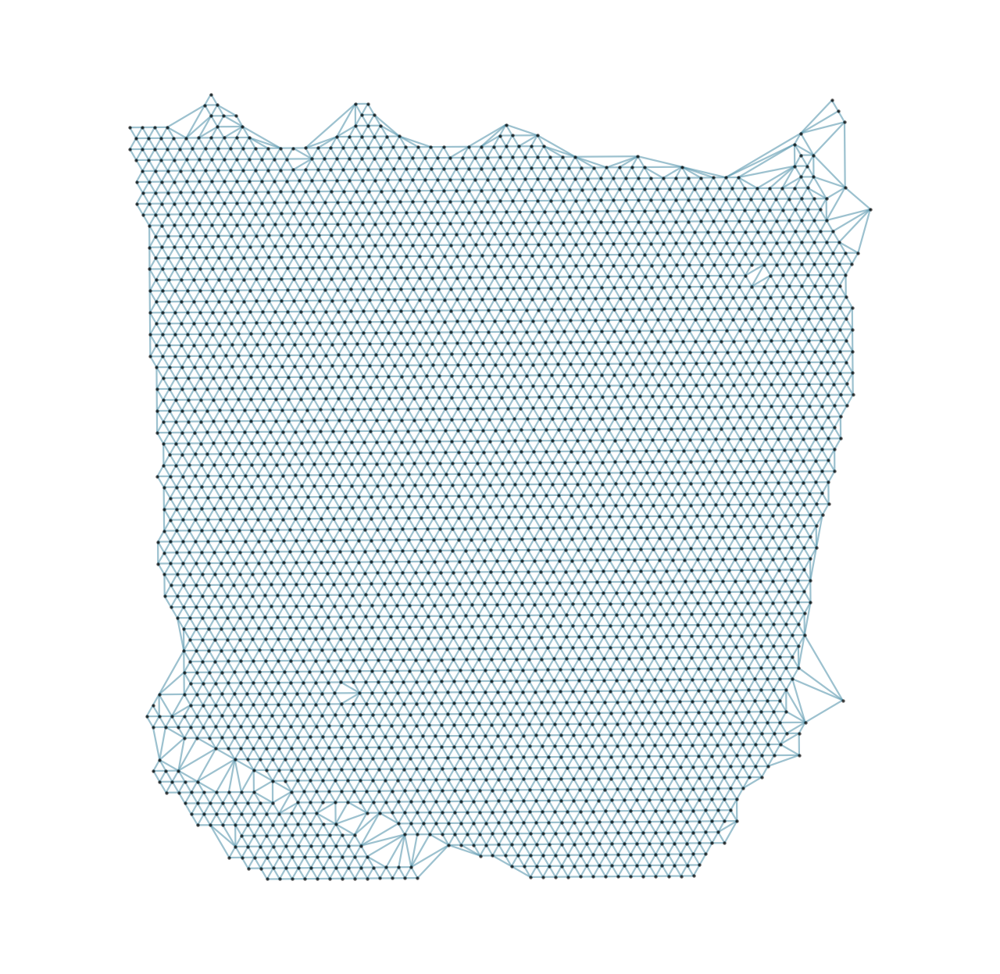
ov.utils.cluster(adata,use_rep='X_cast',method='mclust',n_components=10,
modelNames='EEV', random_state=42,
)
adata.obs['mclust_CAST'] = ov.utils.refine_label(adata, radius=50, key='mclust')
adata.obs['mclust_CAST']=adata.obs['mclust_CAST'].astype('category')
running GaussianMixture clustering
finished: found 10 clusters and added
'mclust', the cluster labels (adata.obs, categorical)
res=ov.space.merge_cluster(adata,groupby='mclust_CAST',use_rep='X_cast',
threshold=0.1,plot=True)
Storing dendrogram info using `.uns['dendrogram_mclust_CAST']`
The merged cluster information is stored in adata.obs["mclust_CAST_tree"].
{kind=link}
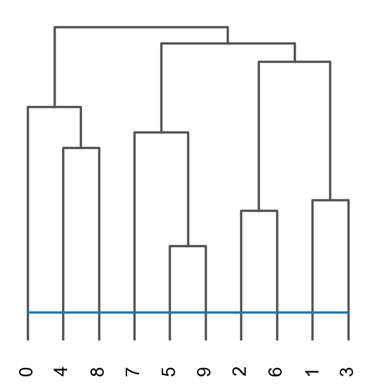
sc.pl.spatial(adata, color=['mclust_CAST','mclust_CAST_tree','mclust','Ground Truth'])
{kind=link}
Method5: Banksy#
methods_kwargs={}
methods_kwargs['Banksy']={
'num_neighbours':15,
'nbr_weight_decay':'scaled_gaussian',
'max_m':1,
'lambda_list':[0.2],
'resolutions':[0.8],
'add_nonspatial':False,
'variance_balance':False,
'match_labels':False,
'filepath':'tmp/banksy',
}
adata=ov.space.clusters(
adata,
methods=['Banksy'],
methods_kwargs=methods_kwargs
)
Median distance to closest cell = 137.00364958642524
---- Ran median_dist_to_nearest_neighbour in 0.01 s ----
---- Ran generate_spatial_distance_graph in 0.01 s ----
---- Ran row_normalize in 0.01 s ----
---- Ran generate_spatial_weights_fixed_nbrs in 0.06 s ----
----- Plotting Edge Histograms for m = 0 -----
Edge weights (distances between cells): median = 238.76766950322232, mode = 137.00364958642524
---- Ran plot_edge_histogram in 0.04 s ----
Edge weights (weights between cells): median = 0.05057751576626019, mode = 0.09776579868038085
---- Ran plot_edge_histogram in 0.03 s ----
---- Ran generate_spatial_distance_graph in 0.02 s ----
---- Ran theta_from_spatial_graph in 0.02 s ----
---- Ran row_normalize in 0.01 s ----
---- Ran generate_spatial_weights_fixed_nbrs in 0.09 s ----
----- Plotting Edge Histograms for m = 1 -----
Edge weights (distances between cells): median = 276.2354068543712, mode = 364.36272904465324
---- Ran plot_edge_histogram in 0.04 s ----
Edge weights (weights between cells): median = (-5.2515238544983064e-05+0.008384965165521282j), mode = -0.001080415232691187
---- Ran plot_edge_histogram in 0.04 s ----
----- Plotting Weights Graph -----
Maximum weight: 0.15104274121695466
---- Ran plot_graph_weights in 0.33 s ----
Maximum weight: (0.07735695704637852+0.0005605576383513445j)
---- Ran plot_graph_weights in 0.64 s ----
----- Plotting theta Graph -----
Runtime Jan-08-2026-00-33
10747 genes to be analysed:
Gene List:
Index(['NOC2L', 'KLHL17', 'HES4', 'ISG15', 'AGRN', 'C1orf159', 'SDF4',
'B3GALT6', 'UBE2J2', 'SCNN1D',
...
'MT-ATP8', 'MT-ATP6', 'MT-CO3', 'MT-ND3', 'MT-ND4L', 'MT-ND4', 'MT-ND5',
'MT-ND6', 'MT-CYB', 'AC007325.4'],
dtype='object', length=10747)
Check if X contains only finite (non-NAN) values
Decay Type: scaled_gaussian
Weights Object: {'weights': {0: <3460x3460 sparse matrix of type '<class 'numpy.float64'>'
with 51900 stored elements in Compressed Sparse Row format>, 1: <3460x3460 sparse matrix of type '<class 'numpy.complex128'>'
with 103800 stored elements in Compressed Sparse Row format>}}
Nbr matrix | Mean: 0.27 | Std: 0.42
Size of Nbr | Shape: (3460, 10747)
Top 3 entries of Nbr Mat:
[[0.34965952 0.10314547 0.25060342]
[0.03750811 0. 0.3298474 ]
[0.24471095 0.20862651 0.39286428]]
AGF matrix | Mean: 0.09 | Std: 0.09
Size of AGF mat (m = 1) | Shape: (3460, 10747)
Top entries of AGF:
[[0.09590092 0.07119773 0.09831454]
[0.02268589 0.0157818 0.08236299]
[0.10259601 0.14517428 0.09064761]]
Ran 'Create BANKSY Matrix' in 0.1 mins
Cell by gene matrix has shape (3460, 10747)
Scale factors squared: [0.8 0.13333333 0.06666667]
Scale factors: [0.89442719 0.36514837 0.25819889]
Shape of BANKSY matrix: (3460, 32241)
Type of banksy_matrix: <class 'anndata._core.anndata.AnnData'>
Current decay types: ['scaled_gaussian']
Reducing dims of dataset in (Index = scaled_gaussian, lambda = 0.2)
==================================================
Setting the total number of PC = 20
Original shape of matrix: (3460, 32241)
Reduced shape of matrix: (3460, 20)
------------------------------------------------------------
min_value = -32.08530858175148, mean = 4.189327112574001e-17, max = 71.19746300495925
Conducting clustering with Leiden Parition
Decay type: scaled_gaussian
Neighbourhood Contribution (Lambda Parameter): 0.2
reduced_pc_20
PCA dims to analyse: [20]
====================================================================================================
Setting up partitioner for (nbr decay = scaled_gaussian), Neighbourhood contribution = 0.2, PCA dimensions = 20)
====================================================================================================
Nearest-neighbour weighted graph (dtype: float64, shape: (3460, 3460)) has 173000 nonzero entries.
---- Ran find_nn in 0.15 s ----
Nearest-neighbour connectivity graph (dtype: int16, shape: (3460, 3460)) has 173000 nonzero entries.
(after computing shared NN)
Allowing nearest neighbours only reduced the number of shared NN from 1068214 to 172908.
Shared nearest-neighbour (connections only) graph (dtype: int16, shape: (3460, 3460)) has 171525 nonzero entries.
Shared nearest-neighbour (number of shared neighbours as weights) graph (dtype: int16, shape: (3460, 3460)) has 171525 nonzero entries.
sNN graph data:
[28 10 17 ... 14 24 12]
---- Ran shared_nn in 0.08 s ----
-- Multiplying sNN connectivity by weights --
shared NN with distance-based weights graph (dtype: float64, shape: (3460, 3460)) has 171525 nonzero entries.
shared NN weighted graph data: [0.10762001 0.10781988 0.10841317 ... 0.11061305 0.1362395 0.13745543]
Converting graph (dtype: float64, shape: (3460, 3460)) has 171525 nonzero entries.
---- Ran csr_to_igraph in 0.03 s ----
Resolution: 0.8
------------------------------
---- Partitioned BANKSY graph ----
modularity: 0.77
11 unique labels:
[ 0 1 2 3 4 5 6 7 8 9 10]
---- Ran partition in 0.82 s ----
No annotated labels
After sorting Dataframe
Shape of dataframe: (1, 7)
Anndata AxisArrays with keys: reduced_pc_20
| decay | lambda_param | num_pcs | resolution | num_labels | labels | adata | |
|---|---|---|---|---|---|---|---|
| scaled_gaussian_pc20_nc0.20_r0.80 | scaled_gaussian | 0.2 | 20 | 0.8 | 11 | Label object:\nNumber of labels: 11, number of... | [[[View of AnnData object with n_obs × n_vars ... |
{kind=link}
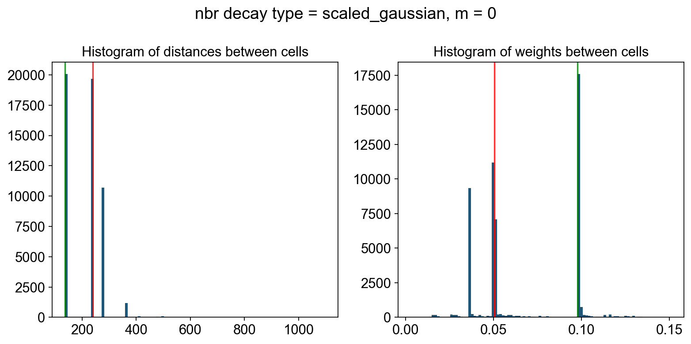
{kind=link}
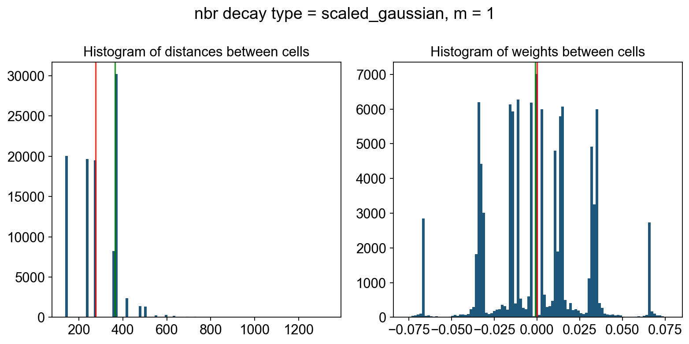
{kind=link}
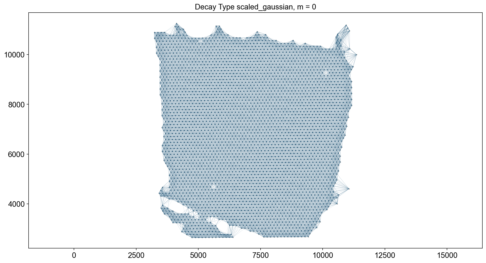
{kind=link}
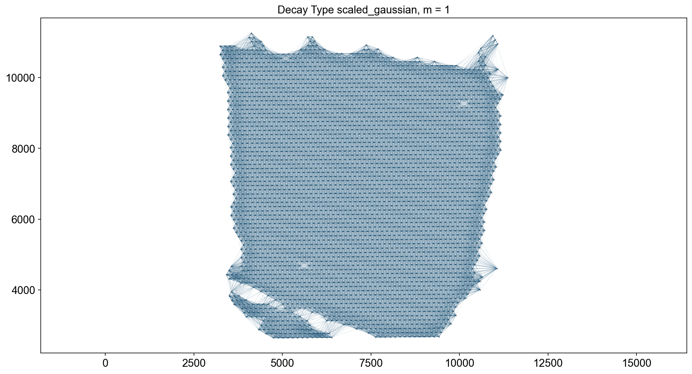
{kind=link}
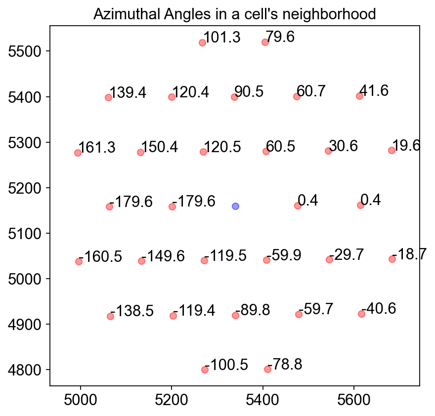
{kind=link}
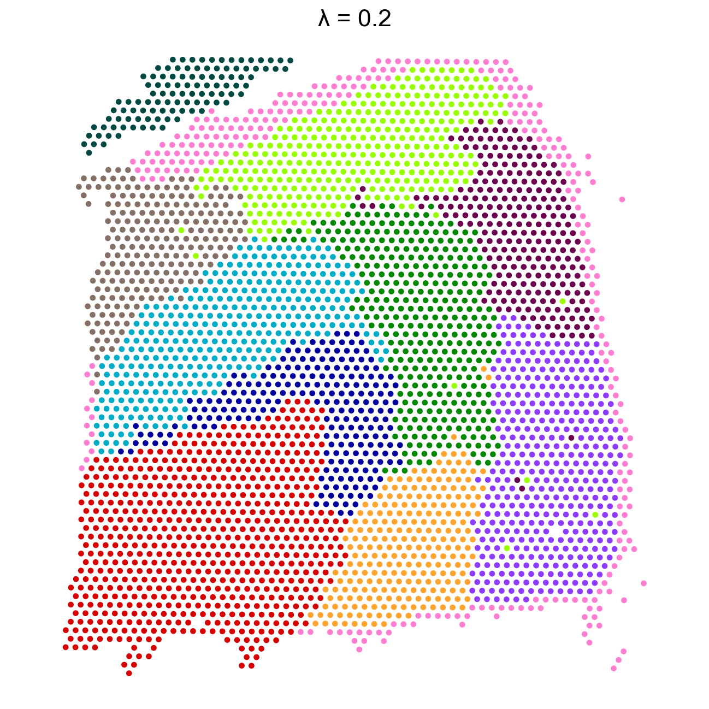
adata.obsm['X_banksy']=adata.obsm['X_banksy_scaled_gaussian_pc20_nc0.20_r0.80']
ov.utils.cluster(adata,use_rep='X_banksy',method='mclust',n_components=10,
modelNames='EEV', random_state=42,
)
adata.obs['mclust_banksy'] = ov.utils.refine_label(adata, radius=50, key='mclust')
adata.obs['mclust_banksy']=adata.obs['mclust_banksy'].astype('category')
running GaussianMixture clustering
finished: found 10 clusters and added
'mclust', the cluster labels (adata.obs, categorical)
sc.pl.spatial(adata,
color=['mclust_banksy','mclust','Ground Truth']
)
{kind=link}
Evaluate cluster#
We use ARI to evaluate the scoring of our clusters against the true values
While it appears that STAGATE works best, note that this is only on this dataset.
If your data is spot-level resolution, GraphST, BINARY and STAGATE would be good algorithms to use
BINARY and CAST would be good algorithms if your data is NanoString or other single-cell resolution
from sklearn.metrics.cluster import adjusted_rand_score
obs_df = adata.obs.dropna()
#GraphST
ARI = adjusted_rand_score(obs_df['mclust_GraphST'], obs_df['Ground Truth'])
print('mclust_GraphST: Adjusted rand index = %.2f' %ARI)
ARI = adjusted_rand_score(obs_df['mclust_R_GraphST'], obs_df['Ground Truth'])
print('mclust_R_GraphST: Adjusted rand index = %.2f' %ARI)
ARI = adjusted_rand_score(obs_df['mclust_R_STAGATE'], obs_df['Ground Truth'])
print('mclust_STAGATE: Adjusted rand index = %.2f' %ARI)
ARI = adjusted_rand_score(obs_df['mclust_BINARY'], obs_df['Ground Truth'])
print('mclust_BINARY: Adjusted rand index = %.2f' %ARI)
ARI = adjusted_rand_score(obs_df['mclustpy_BINARY'], obs_df['Ground Truth'])
print('mclustpy_BINARY: Adjusted rand index = %.2f' %ARI)
ARI = adjusted_rand_score(obs_df['mclust_CAST'], obs_df['Ground Truth'])
print('mclust_CAST: Adjusted rand index = %.2f' %ARI)
mclust_GraphST: Adjusted rand index = 0.37
mclust_R_GraphST: Adjusted rand index = 0.42
mclust_STAGATE: Adjusted rand index = 0.53
mclust_BINARY: Adjusted rand index = 0.47
mclustpy_BINARY: Adjusted rand index = 0.43
mclust_CAST: Adjusted rand index = 0.40
from sklearn.metrics.cluster import adjusted_rand_score
obs_df = adata.obs.dropna()
ARI = adjusted_rand_score(obs_df['mclust_banksy'], obs_df['Ground Truth'])
print('mclust_banksy: Adjusted rand index = %.2f' %ARI)
mclust_banksy: Adjusted rand index = 0.46